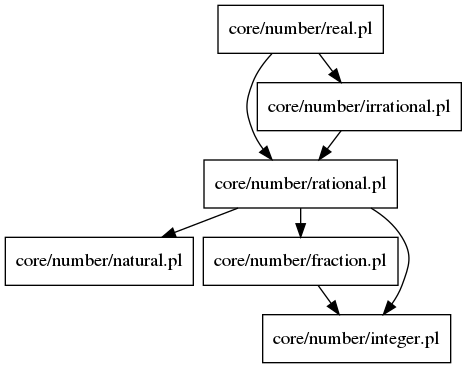

Documentation for Prolog file: real.pl
- This file contains the definition of a real number (either a rational or an irrational number) and the definition of absolute value of such a number.

-
- Form:
- real(A)
- Description:
- This predicate failes if A is neither a rational or an irrational value.
-
- Form:
- abs_real(X, A)
- Description:
- A is the aboslute value of X.
- Constraints:
- X is a real number.
Generated with DYP